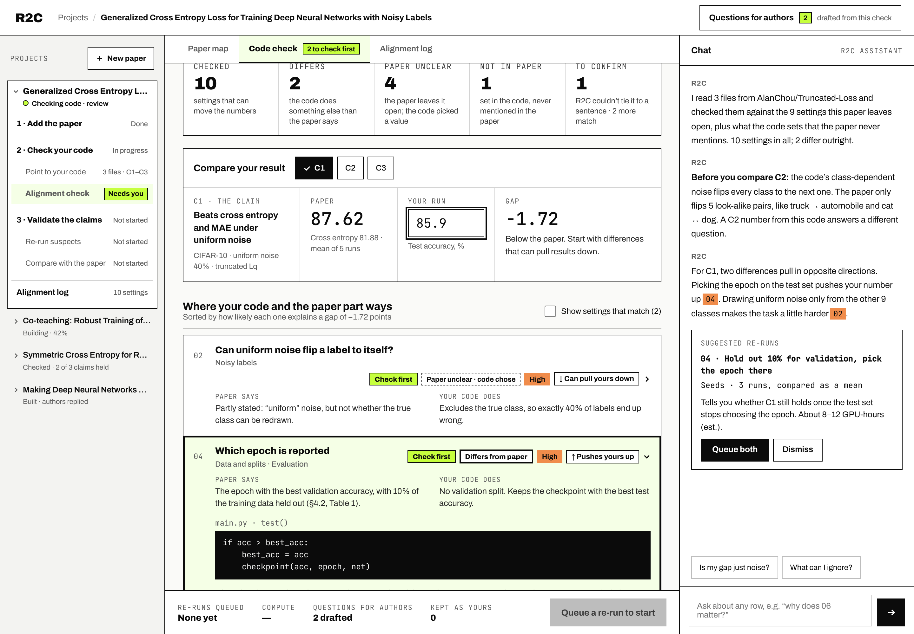

Value-proposition pivot · Applied AI · In progress
A CMU capstone in partnership with an applied AI research lab. The lab had built a pipeline that turns research papers into code. Research showed that generating code was no longer the hard part. So I led a value-proposition pivot: from producing code to helping researchers verify it, and understand why paper-generated code falls short of the paper’s reported performance.
5 hrs
of in-depth interviews
4 researchers across academia and industry
205
community posts coded
GitHub, Reddit, Hacker News, reproduction reports
3
synthetic users
built only from real interviews and posts
5
categories of tools benchmarked
from paper-to-code generators to coding agents
My role
Product Lead
Work plan → user research → product direction
Team
Four-person CMU product team, working with the lab’s research engineers
Users
ML and robotics researchers who implement methods from published papers
Timeline & methods
Aug 2026 – present · Interviews, synthetic users, competitive benchmarking, prototyping
This project started in August 2026 and is ongoing. The concepts shown here come from user research and benchmarking, and have not yet been evaluated for technical feasibility. Results will be added as the work continues.
01 — The approach
I split the first sprint into two questions answered side by side: what researchers need when they turn a paper into code, and what existing tools already do. Where the two answers met is where the product should focus.
ATrack A · User needs
Synthetic User Exploration
Understand the paper, identify missing information, and lower the barrier to implementation.
Early concepts
Paper Map + Alignment Check
BTrack B · Market landscape
Competitive Benchmarking
Existing tools offer code generation, but implementation and result verification are still open.
Strategic insight
Generation alone offered limited differentiation
Synthesis · Reframing the opportunity
From code generation to implementation verification
Help researchers understand why generated code fails to reproduce a paper’s results, and how to fix it.
02 — The outcome
The original pipeline assumed researchers needed code faster. The research showed they could already get code. What they couldn’t get was confidence in it.

How faithful is it to the paper?
If results don’t match, what matters most?
Before · The original assumption
Assumed problem
Researchers need a faster way to turn papers into code
Solution · A multi-agent pipeline, one run
After · What research showed
Real problem
Getting code is easy. Researchers get stuck on what the paper never states, and can’t tell why their results don’t match
Solution · A verification workspace, researcher in the loop
03 — Synthetic users
Four interviews gave depth but not breadth, and access to more researchers was limited. To widen coverage without inventing users, I designed a synthesis method: combine the interviews with public discussions from researchers reproducing papers, and let every trait of a synthetic user trace back to a real source.
Data in · Real voices
4 + 205
3 synthetic users
Every trait cites a real source
How they’re built · Synthesis rules
What researchers struggle with
Pain points · posts raising each, of 205
Three users, clustered by pain point and behavior
PhD student
“Why doesn’t my number match the paper?”
Needs first
A baseline they can trust, and to know what the paper left out before running anything
66 posts · interviews P3, P4
Industry R&D engineer
“Can this one piece work in my product?”
Needs first
To build only the part of the paper that matters, and explain every line before it merges
54 posts · interviews P2, P4
Senior researcher
“Is this paper worth my team’s time?”
Needs first
To see what the paper claims and how well each claim is supported, before committing a team
74 posts · interviews P1, P3
Quotes summarize each group’s core question and are not verbatim. Public posts skew academic (95 vs. 10 from industry), so the industry engineer relies more on interviews.
04 — Competitive benchmarking
We compared the tools a researcher could reach for today, using only results their authors published: what each one delivers, whether it runs the code, and how it checks its own output.
| Tool | Delivers | Runs the code | How it checks its output |
|---|---|---|---|
| Paper2Code | Code repository | No | Reviews the repository, no runtime check |
| DeepCode | Code repository | Yes, run and fix | Stops once the code runs without errors |
| Coding agents Claude Code, Cursor, Codex | Code the user directs | Yes | General debugging |
| Paper2Agent | Tools built from the authors’ code | Yes | Checks against reference results, but needs working author code |
| OpenResearch | Research project and experiments | Yes | Tracks experiment history |
Why we moved away from code generation
The gap no one measures yet
73.5%
Best score when graded on the code alone
21.0%
Best reported score when the code must run and match the paper’s results
So what: generating code is already good enough. Where tools still fall short is matching the paper’s results.
PaperBench (ICML 2025) and DeepCode (2025), as reported by their authors.
Where we moved
Keep the code honest
Check the code against the paper setting by setting, so differences and guesses are visible.
Rank the differences by how much each could move the result, so researchers fix the right thing first.